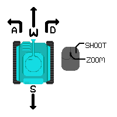

Ok znaci ti si tenkic, moras ubit druge tenkice
Mices se sa wasd, mices turret sa misem, pucas sa left click

Ima puno boostova, ali ne možeš imati više njih u isto vrijeme, ako već imaš boost, ne možeš skupiti drugi:
Štit - immunity na smrt na 7 sekundi
Laser - sljedeci pucanj je like brz i ima malu šansu da prođe kroz zid
Shotgun - sljedeci pucanj se izbacuje 5 metaka pod 60° kutem
 Reload - sljedecih 10s reload je četverostruko brzi
Reload - sljedecih 10s reload je četverostruko brzi
Nevidljivost - ajde zakljuci (7s, ili do kad pucas)
 Ubrzanje - brz si, ubijas ljude ako se sudaris u njih neovisno o tome imaju li revive ili shield(10s)
Ubrzanje - brz si, ubijas ljude ako se sudaris u njih neovisno o tome imaju li revive ili shield(10s)
Smrzavanje - ljudi se zaustave (5s)
Uskrsnuće - metak te ne ubije, ali nakon toga ne mozes igrat na 1s i jos nakon toga imas shield na 2s (dozivotno)
Sretno bb